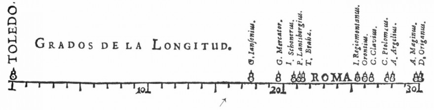
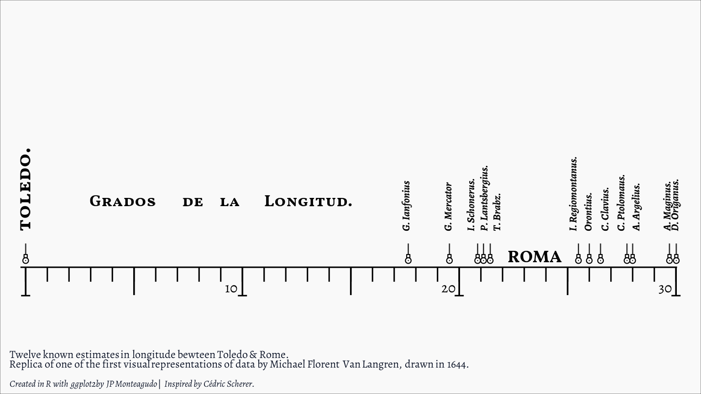

![]()
library(here)
library(tidyverse)
library(ggtext)
library(showtext)
library(ragg)
base_path <- here::here("2024","img")
# ------------------------------------ ##
# Setting fonts
font_add_google("Vollkorn SC", "volk")
# font_add_google("Sedan", "sedan") not loading the font
font_add_google("Faustina","faustina")
font_add_google("Averia Serif Libre", "averia")
font_add_google("Alegreya", "alegre")
showtext_auto()
# Testing fonts
tib <- tibble(family = c('volk','faustina','averia','alegre'),
x = 0,y = seq(0.0, 1, length.out = 4),
label = 'Toledo. Grados de Longitud 10,20,30')
tib %>%
ggplot(aes(x, y, label = label)) +
geom_text(family = tib$family, size = 13, hjust = 0, col = 'dodgerblue4') +
coord_cartesian(xlim = c(0, 1), ylim = c(0, 1)) +
theme_void()
# Choosing title and body font
body_font <- "alegre"
title_font <- "volk"
#-------------------------------------- ##
# Creating ticks, labels, and markers
minor <- tibble(x = 0:30, # minor ticks
ymax = 1,
ymin = .87)
major <- tibble(x = seq(0,30,5), # major ticks
ymax = 1,
ymin = .75)
v_ticks <- tibble(x = c(0,10,20,30), # vertical ticks
y = .745) |>
mutate(xmin = x - .21, xmax = x + .21) # longer to account for labels
x_labs <- tibble(x = c(9.5,19.5,29.5), # setting num. on numberline
y = .8,
lab = c("<span style ='font-size:23pt;'>10</span>",
"<span style ='font-size:23pt;'>20</span>",
"<span style ='font-size:23pt;'>30</span>")
)
zero_labs <- tibble(x = 0, #setting labels in Vollkorn SC
y = 1.31,
lab = ("<b style='font-size:32pt;'>toledo.</b>"))
v_labs <- tibble( # setting labels in Alegreya
x = c(17.6,19.55,20.60,21.21,21.8,25.3,26,26.78,27.52,28.21,29.65,30.01),
y= 1.31,
lab = c("<i> G. Ianfonius</i>","<i>G. Mercator",
"<i>I. Schonerus.</i>", "<i>P. Lantsbergius.</i>", "<i>T. Brabz.</i>",
"<i>I. Regiomontanus.</i>", "<i>Orontius.</i>", "<i>C. Clavius.</i>",
"<i>C. Ptolomaus.</i>", "<i>A. Argelius.</i>", "<i>A. Maginus.</i>",
"<i>D. Origanus.</i>")
)
circle_markers <- tibble(
x = c(0,17.65,19.55,20.85,21.12,21.43,25.5,26,26.52,27.74,28,29.7,30.015),
y = 1.35
)
h_labs <- tibble( # setting labels in Vollkorn SC
x = c(4.5,7.75,9.45,13.065,23.5),
y = c(1.60,1.60,1.60,1.60,1.10),
lab = c("<span style='font-size:27pt;'>Grados</span>","<span style='font-size:27pt;'>de</span>",
"<span style='font-size:27pt;'>la</span>","<span style='font-size:27pt;'>Longitud.</span>",
"ROMA")
)
# Creating caption text
cpt <- ("Twelve known estimates in longitude bewteen Toledo & Rome.<br> Replica of one of the first visual representations of data by Michael Florent Van Langren,
drawn in 1644.<span style='font-size:15pt;'><br><br><i> Created in R with ggplot2 by JP Monteagudo</i> | <i>Inspired by Cédric Scherer.</i></span>")
# Create plot with specified ticks, markers, and labels
ggplot() +
# Creating minor, major, and vertical ticks
geom_linerange(aes(xmin = -.24,xmax = 30.05,y =1), linewidth = 1.4) +
geom_linerange(data = minor, aes(x = x,ymin = ymin, ymax = ymax), linewidth = 1.4) +
geom_linerange(data = major, aes(x = x, ymin = ymin, ymax = ymax), linewidth = 1.6) +
geom_linerange(data = v_ticks, aes(xmin = xmin, xmax = xmax, y = y),linewidth = 1.4) +
# Setting markers in place (4 figures to create pointer)
geom_point(data = circle_markers, aes(x,y = 1.16),shape ="|", size = 4.5,
stroke = 4) +
geom_point(data = circle_markers, aes(x,y = 1.10), shape = 22, size = 2.5,
stroke = 1.5, fill ="white") +
geom_point(data = circle_markers, aes(x,y = 1.06), shape = 21, size = 4.5,
stroke = 1.5, fill = "white") +
geom_point(data = circle_markers, aes(x, y = 1.06), size = .5) +
# Adding label text
geom_richtext(data = x_labs, aes(x,y, label = lab), size = 6, family = body_font,
fill = NA, label.colour = NA) +
geom_text(data = h_labs[5,],aes(x,y, label = lab), size = 10, family = title_font,
fontface = "bold") +
geom_richtext(data = h_labs[1:4,],aes(x,y,label = lab), size = 14, family = title_font,
fontface = "bold",fill = NA, label.colour = NA) +
geom_richtext(data = zero_labs, aes(x,y,label = lab), angle = 90, hjust = 0, size = 6,
family = title_font, fontface = "bold",fill = NA, label.colour = NA) +
geom_richtext(data = v_labs, aes(x,y, label = lab),angle = 90, hjust = 0, size = 6,
family = body_font, fontface = "bold", fill = NA, label.colour = NA) +
scale_x_continuous(expand = c(.03,.03)) +
scale_y_continuous(limits = c(.4,3.4), expand = c(0,0)) +
theme_void() + # update to theme_gray to figure out the letter–spacing, markers dist, and height.
theme( # it took me at least 32 attempts to get spacing right
plot.background = element_rect(fill = "#f9f9f9", colour = NULL,linewidth = NULL),
plot.caption = element_markdown(family = body_font, size = 18, color = "#0f172a",
hjust = 0, lineheight = 1.1, margin = margin(35,5,10,20))) +
labs(caption = cpt)
## Watch out for disproportionate marker size due to difference in units (mm vs. px for plot)
ggsave(here::here("Scripts","2024","30DCC","Makeover","makeover_1.png"),
width = 16,height = 13,device = agg_png)The goal is to recreate this image using R and ggplot2.

We get an image that’s pretty close to the original.

Citation
For attribution, please cite this work as:
Monteagudo, JP. n.d. “Remake of Visual Representation of
Statistical Data Graphed in 1644 by Michael van Langren.” https://doi.org/10.59350/bje88-8r592.